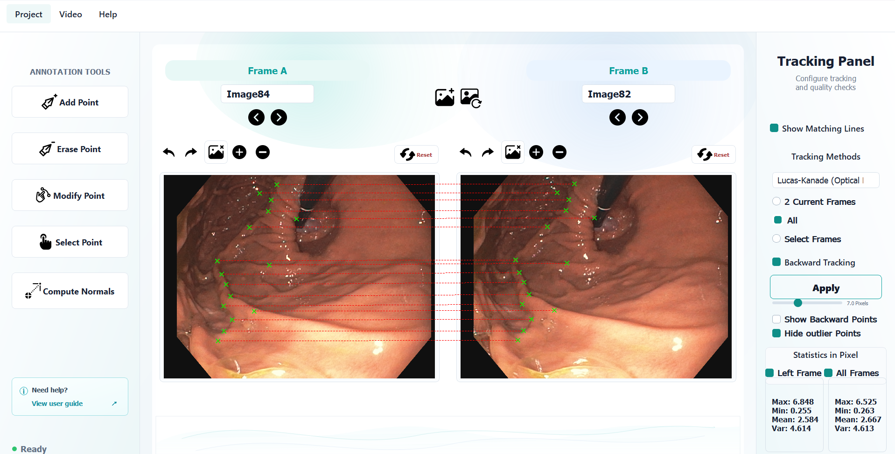

EndoTracker
A desktop tool for annotating and tracking 2D points in endoscopic image sequences.Un outil desktop pour annoter et suivre des points 2D dans des séquences d'images endoscopiques.
EndoTracker combines manual annotation tools with semi-automatic optical-flow and correlation-based tracking methods. It lets users inspect frame-to-frame correspondences, correct points, visualize matching lines, and export results for downstream analysis.EndoTracker combine des outils d'annotation manuelle avec des méthodes de suivi semi-automatique basées sur le flux optique et la corrélation. L'application permet d'inspecter les correspondances image par image, de corriger les points, de visualiser les lignes de correspondance et d'exporter les résultats pour des analyses ultérieures.
- TypeType
- Desktop applicationApplication desktop
- FieldDomaine
- Computer visionVision par ordinateur
- DataDonnées
- Endoscopic images and videosImages et vidéos endoscopiques
- ToolsOutils
- Python · OpenCV · PyQt
01
Interface overviewVue d'ensemble de l'interface
The interface is organized around three main areas: an annotation toolbar, a dual-frame workspace for comparing two images side by side, and a tracking panel for selecting methods, propagation modes, backward checks and statistics.L'interface est organisée autour de trois zones principales : une barre d'outils d'annotation, un espace de travail à deux images pour comparer deux vues côte à côte, et un panneau de suivi pour sélectionner les méthodes, les modes de propagation, les vérifications arrière et les statistiques.

02
Key featuresFonctionnalités principales
- Load endoscopic images or extract frames from a videoCharger des images endoscopiques ou extraire des frames à partir d'une vidéo
- Display two frames side by side for visual comparisonAfficher deux images côte à côte pour une comparaison visuelle
- Add, erase, modify and select 2D feature pointsAjouter, effacer, modifier et sélectionner des points 2D
- Add points manually or detect features with SIFTAjouter des points manuellement ou détecter des features avec SIFT
- Propagate points between frames, across all frames or over a selected intervalPropager les points entre deux images, sur toute la séquence ou sur un intervalle sélectionné
- Enable backward tracking to check correspondence consistencyActiver le suivi arrière pour vérifier la cohérence des correspondances
- Show matching lines, filter outliers and compute pixel-error statisticsAfficher les lignes de correspondance, filtrer les points aberrants et calculer les statistiques d'erreur en pixels
- Save projects and export point data to Excel-compatible filesSauvegarder les projets et exporter les données de points vers des fichiers compatibles Excel
Tools:Outils : Python · OpenCV · PyQt · SIFT · Excel export
03
Tracking methodsMéthodes de suivi
EndoTracker exposes several tracking methods from the tracking panel. Each method can be applied to the two current frames, to the full sequence, or to a selected frame interval.EndoTracker expose plusieurs méthodes de suivi depuis le panneau de tracking. Chaque méthode peut être appliquée aux deux images courantes, à toute la séquence, ou à un intervalle d'images sélectionné.
- Lucas-Kanade optical flowFlux optique Lucas-Kanade
- DIS optical flowFlux optique DIS
- Farneback optical flowFlux optique Farneback
- Phase correlationCorrélation de phase
- Normalized cross correlationCorrélation croisée normalisée
Backward checks help detect unstable correspondences, while matching-line visualization makes it easier to inspect and correct tracking results manually.Les vérifications arrière aident à détecter les correspondances instables, tandis que la visualisation des lignes de correspondance facilite l'inspection et la correction manuelle des résultats.
04
WorkflowWorkflow
- Open a new project or load an existing one.Créer un nouveau projet ou charger un projet existant.
- Load images directly, or extract frames from a video.Charger des images directement, ou extraire des frames depuis une vidéo.
- Select Frame A and Frame B for side-by-side comparison.Sélectionner Frame A et Frame B pour une comparaison côte à côte.
- Add, erase, modify or select feature points.Ajouter, effacer, modifier ou sélectionner des points d'intérêt.
- Choose a tracking method and propagation mode.Choisir une méthode de suivi et un mode de propagation.
- Run tracking, review correspondences and correct points if needed.Lancer le suivi, relire les correspondances et corriger les points si nécessaire.
- Extract statistics, save the project or export the results.Extraire les statistiques, sauvegarder le projet ou exporter les résultats.
05
What this project showsCe que montre ce projet
This project demonstrates my ability to build a complete scientific desktop application: image/video loading, annotation UX, classical computer vision algorithms, tracking validation, statistics, project persistence and data export.Ce projet montre ma capacité à développer une application scientifique desktop complète : chargement d'images et de vidéos, expérience d'annotation, algorithmes de vision classique, validation du suivi, statistiques, sauvegarde de projet et export de données.
Project based on endoscopic image sequences. Screenshots and videos used in the portfolio contain no patient-identifying information.Projet basé sur des séquences d'images endoscopiques. Les captures et vidéos utilisées dans le portfolio ne contiennent aucune information permettant d'identifier un patient.
Contact
Tell me about your data and your goal.Parlez-moi de vos données et de votre objectif.
Open to roles and projects in medical imaging, computer vision and AI. I build tools that turn image data into workflows people can inspect, correct and reuse.Ouvert aux postes et projets en imagerie médicale, vision par ordinateur et IA. Je développe des outils qui transforment les données d'image en workflows que les utilisateurs peuvent inspecter, corriger et réutiliser.